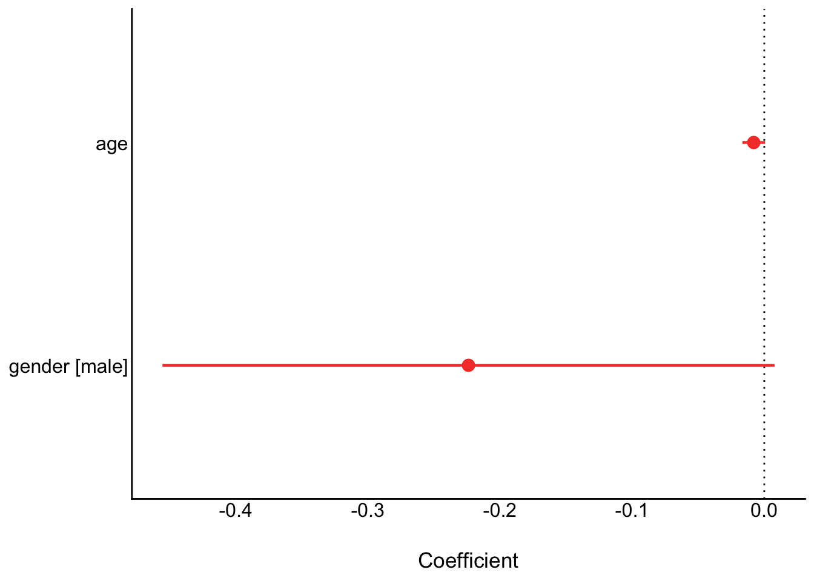
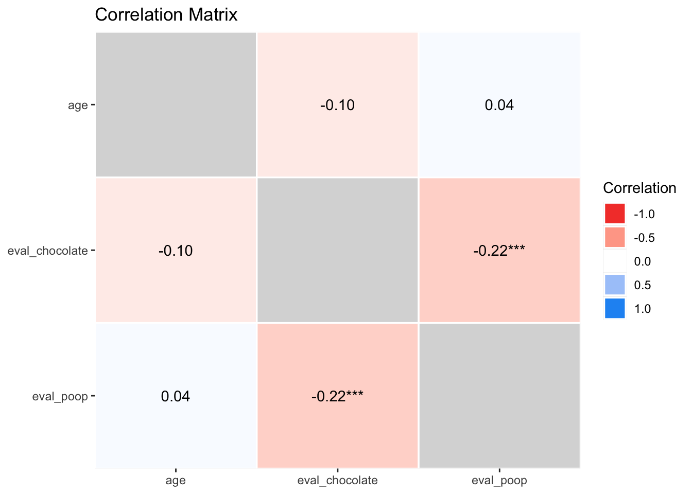
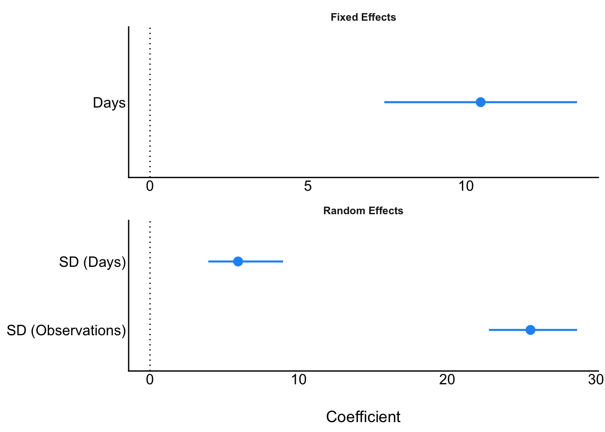
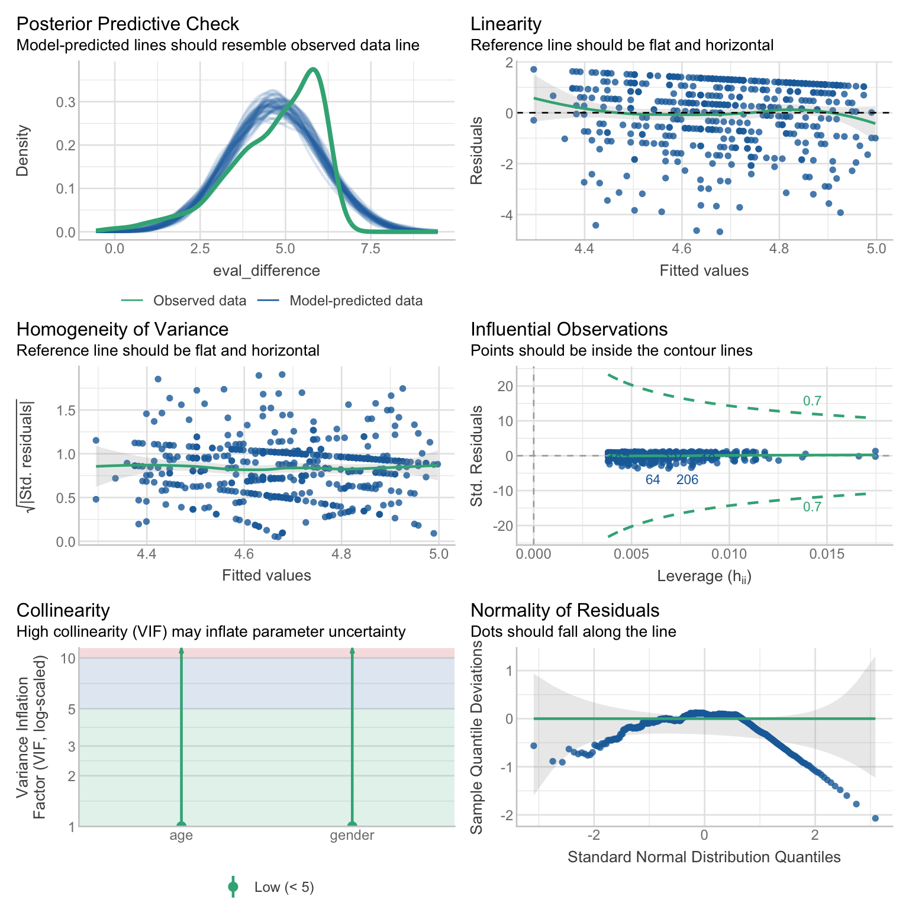
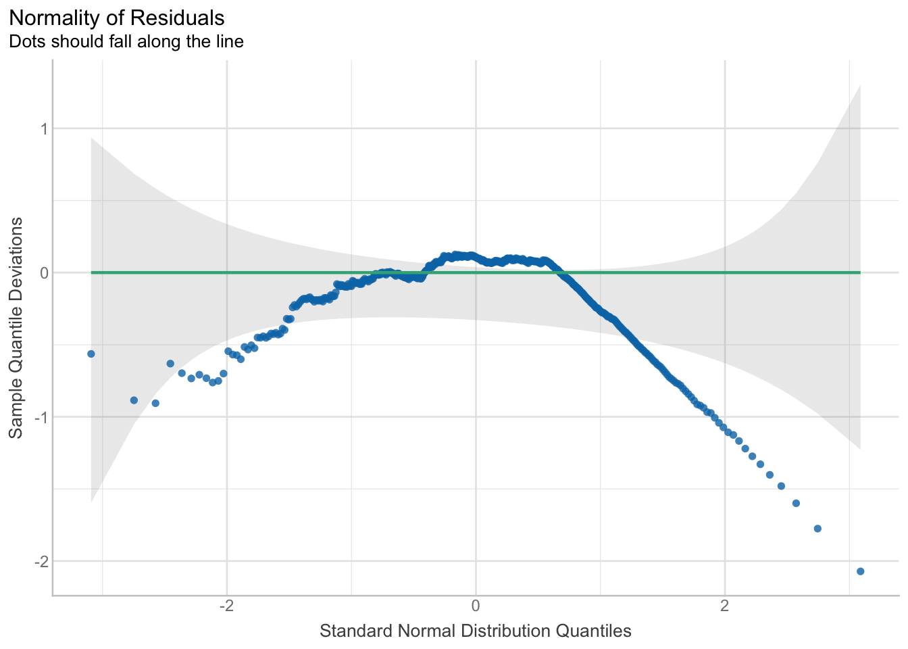
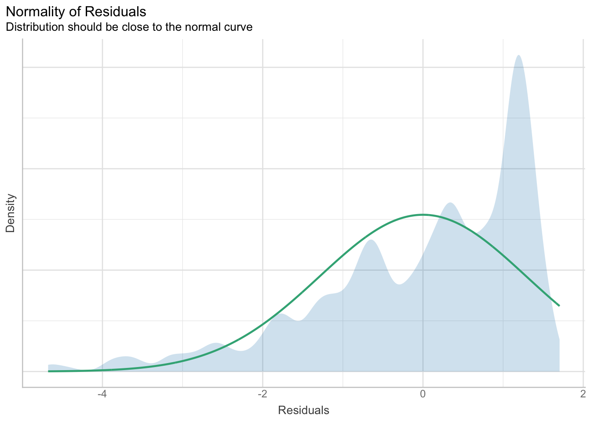
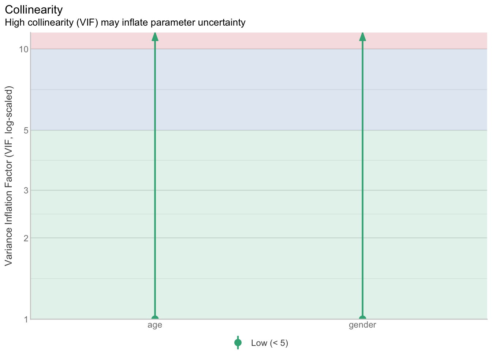
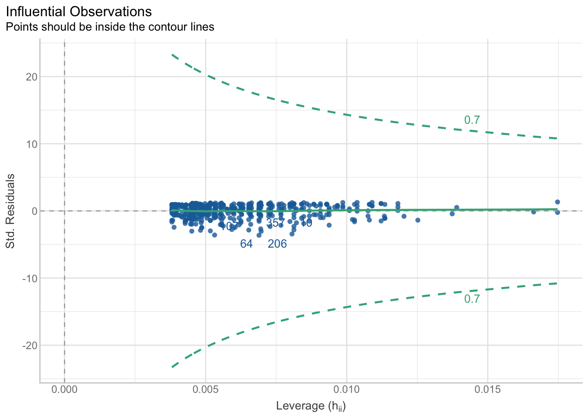
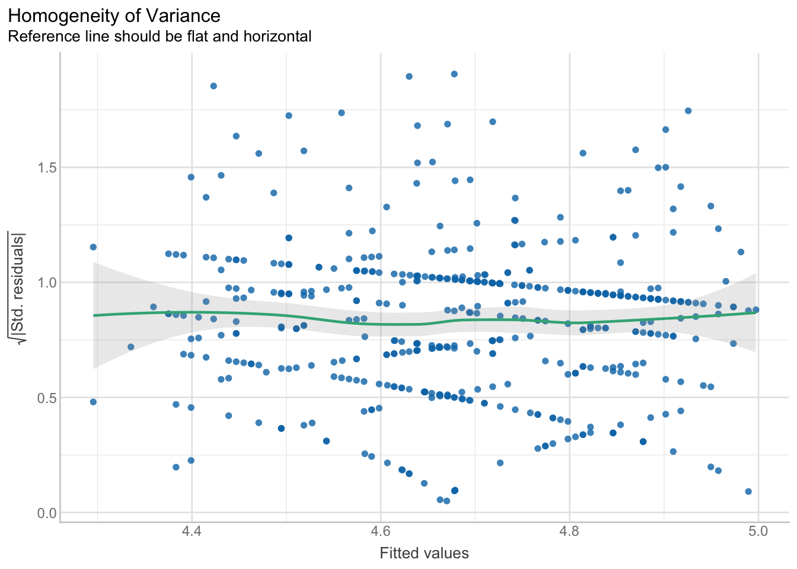
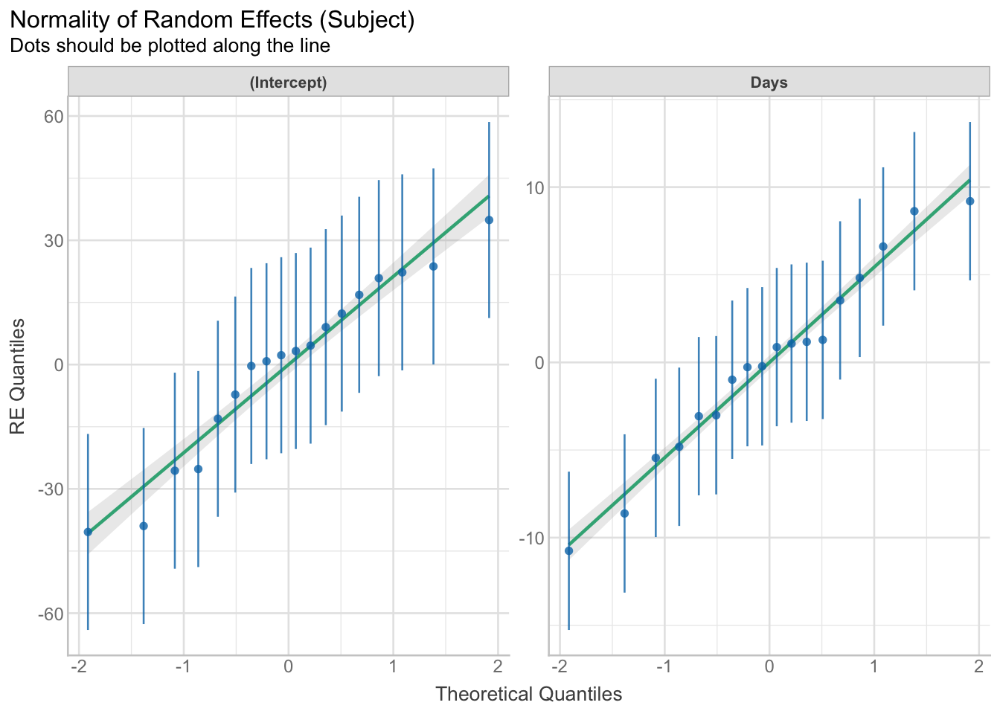

flowchart LR A["<b>Research methods</b><br>Designing studies<br>and collecting data"] --> B["<b>Data wrangling</b><br>Producing a tidy,<br>processed dataset"] B --> C["<b>Statistical analysis</b><br>Fitting models to<br>answer research questions"] C --> D["<b>Reporting</b><br>Communicating<br>the results"] style D stroke-width:3px
19 Reporting
Most of this book has been about getting data ready for analysis: importing it, cleaning it, checking it, reshaping it, combining it, and scoring it. The end product of all that work is a tidy, processed dataset. That dataset is then fed into statistical analyses, and the results of those analyses are reported in a thesis, article, or report.
This book doesn’t teach you which statistical analyses to run; that is the job of your statistics courses. But the last step, reporting the results, has a lot in common with data wrangling. It is another place where results can silently go wrong, and where code can do the work more reliably than you can by hand.
NoteUnderstanding the models you report
This chapter shows how to report results from models such as lm(eval_difference ~ 1 + age + gender, data = dat_analysis) automatically. In this formula, the outcome is to the left of ~, the predictors are to the right, and 1 is the intercept.
The ease of automated reporting has to be strongly balanced against thorough understanding of the models themselves. Two companion books cover this:
- Understanding Statistics Through Monte Carlo Simulations (simulations.tidyver.se). To learn what a linear model is, and how correlations, t-tests, non-parametric tests, meta-analyses, multi-level models and more are all linear models in disguise, see its ‘Everything is regression’ chapter. You can read that chapter without first learning how to simulate data.
- Trustworthiness Assessment and Forensic Meta-Science (trustworthyresear.ch). Its ‘Understanding statistics’ part covers how to interpret p-values, Cohen’s d, and standard deviations vs. standard errors, and its later chapters show how reported results can be checked for errors.
19.1 Goals of results reporting
Results should be reported in a way that is:
- Reproducible: every number in the text comes directly from code that runs on the data, rather than being copied by hand from the console into a Word document. Copying by hand is surprisingly error-prone. An automated check of over 250,000 p-values in psychology articles found that about half of the articles contained at least one p-value that was inconsistent with its test statistic and degrees of freedom, and about one in eight contained an inconsistency large enough to change whether the result was statistically significant (Nuijten et al., 2016). Hand-copied results also go out of date silently: if you fix an error in your data processing, every number you copied has to be found and updated by hand.
- Standardized: results are reported in a consistent and recognizable format, such as the American Psychological Association (APA) style that is used in psychology, e.g., “t(485) = 79.58, p < .001”. This makes results easier to read, compare, and check.
- Comprehensive: results include all the information a reader needs to interpret them, not just whether p < .05. This includes the test statistic, degrees of freedom, p-value, an effect size, and a confidence interval for the effect size, and descriptive statistics such as the sample size, means, and standard deviations.
Several R packages help with all three of these goals by converting fitted models into text and tables:
| Package | What it does |
|---|---|
| {report} | Converts fitted models, data frames, and R sessions into English sentences and tables, e.g., report(). Part of the {easystats} family of packages. |
| {parameters} | Extracts model parameters (estimates, confidence intervals, p-values) into a data frame. Part of {easystats}. |
| {effectsize} | Computes effect sizes and their confidence intervals, e.g., Cohen’s d, partial eta squared. Part of {easystats}. |
| {performance} | Checks model assumptions and model fit. Part of {easystats}. |
| {insight} | Formats numbers, p-values, and confidence intervals for reporting. Part of {easystats}. |
| {papaja} | Formats results in APA style, e.g., apa_print(), and can write a whole APA-formatted manuscript from a Quarto or R Markdown document. |
This chapter mostly uses the {easystats} packages, because they work with a very wide range of models in a consistent way.
19.2 Dependencies
library(dplyr) # for %>%, mutate(), filter(), select()
library(readr)
library(tidyr)
library(janitor) # for round_half_up()
library(report) # part of {easystats}
library(see) # part of {easystats}, for plotting {easystats} objects
library(parameters) # part of {easystats}
library(correlation) # part of {easystats}
library(effectsize) # part of {easystats}
library(performance) # part of {easystats}
library(insight) # part of {easystats}
library(papaja)
library(lme4)
library(knitr)
library(kableExtra)19.3 Example data
In this study, participants evaluated two stimuli, a picture of chocolate and a picture of poop, on three 7-point scales (positive-negative, pleasant-unpleasant, good-bad). Participants also completed a series of checks, such as attention checks and bot checks.
The data has already been processed into a tidy format, with one row per participant. We need a few last wrangling steps before we can analyze it: excluding participants who failed any check, and scoring each participant’s evaluation of each stimulus as the mean of the three scales.
dat_processed <- read_csv("../data/processed/data_processed_chocolatepoop.csv")
dat_analysis <- dat_processed %>%
# exclude participants who failed any of the checks
filter(if_all(attention_check1:completion_time_check, ~ .x == "passed")) %>%
# score each participant's mean evaluation of each stimulus
rowwise() %>%
mutate(eval_chocolate = mean(c_across(starts_with("classic_chocolate"))),
eval_poop = mean(c_across(starts_with("classic_poop")))) %>%
ungroup() %>%
# calculate the difference between the two evaluations: how much more positively chocolate is evaluated than poop
mutate(eval_difference = eval_chocolate - eval_poop) %>%
select(participant_id, age, gender, eval_chocolate, eval_poop, eval_difference)Our research question is simple: do people evaluate chocolate more positively than poop? We’ll test this with a paired-samples t-test.
fit_ttest <- t.test(dat_analysis$eval_chocolate,
dat_analysis$eval_poop,
paired = TRUE)
fit_ttest
Paired t-test
data: dat_analysis$eval_chocolate and dat_analysis$eval_poop
t = 79.576, df = 485, p-value < 0.00000000000000022
alternative hypothesis: true mean difference is not equal to 0
95 percent confidence interval:
4.571507 4.802978
sample estimates:
mean difference
4.687243 The output contains everything we need, but not in a form we can put in a results section. The rest of this chapter shows how to get from here to reproducible, standardized, and comprehensive text and tables.
19.4 Reporting results in the text
19.4.1 The problem with copying by hand
The most common way that results end up in a thesis or article is that someone reads them from the console and types them into a Word document. This creates three problems:
- Typos: it’s easy to type 79.85 instead of 79.58, or p = .03 instead of p = .003.
- Inconsistent rounding and formatting: e.g., some p-values rounded to two decimal places and others to three, or “p = 0.000” instead of “p < .001”.
- Results going out of date: if you later change the exclusion criteria or fix a bug in your processing code, every number in the text has to be found and updated by hand.
19.4.2 In-line code
In the Reproducible reports chapter, you learned that Quarto can run R code in the text itself, using in-line code. This means the numbers in your text can be calculated from the data every time the document is rendered.
First, extract and format the values you need in a code chunk:
n_participants <- nrow(dat_analysis)
mean_chocolate <- mean(dat_analysis$eval_chocolate) %>% round_half_up(digits = 2)
mean_poop <- mean(dat_analysis$eval_poop) %>% round_half_up(digits = 2)
t_value <- fit_ttest$statistic %>% round_half_up(digits = 2)
df <- fit_ttest$parameter
p_value <- fit_ttest$p.value %>% format_p(stars = FALSE)Then use them in the text. Writing:
After exclusions, the sample contained
`r n_participants`participants. Chocolate (M =`r mean_chocolate`) was evaluated more positively than poop (M =`r mean_poop`), t(`r df`) =`r t_value`,`r p_value`.
renders as:
After exclusions, the sample contained 486 participants. Chocolate (M = 6.45) was evaluated more positively than poop (M = 1.76), t(485) = 79.58, p < .001.
If the data or the exclusions change, the text updates itself when you re-render the document.
Notice the formatting helpers. round_half_up() from {janitor} rounds the way you were taught in school (2.345 becomes 2.35). Base R’s round() rounds halves to the nearest even number instead (2.345 can become 2.34). format_p() from {insight} formats a p-value according to APA style, e.g., “p < .001” rather than “p = 0.000000000000000000000000000001”.
19.4.3 Automated text with {report}
Extracting each value by hand is reproducible, but it takes a lot of code and it’s easy to leave out important information, such as the effect size. The {report} package does this work for you: report() converts a fitted model into an English description of the results.
report(fit_ttest)Effect sizes were labelled following Cohen's (1988) recommendations.
The Paired t-test testing the difference between dat_analysis$eval_chocolate
and dat_analysis$eval_poop (mean difference = 4.69) suggests that the effect is
positive, statistically significant, and large (difference = 4.69, 95% CI
[4.57, 4.80], t(485) = 79.58, p < .001; Cohen's d = 3.61, 95% CI [3.36, 3.85])This text is reproducible, standardized, and more comprehensive than what we wrote ourselves: it includes the mean difference, its confidence interval, and an effect size (Cohen’s d) with its own confidence interval. The labels such as “large” come from conventional cut-offs for effect sizes (Cohen, 1988), which are only a rough guide and not appropriate in every research area.
If you only want the statistics, e.g., to put in brackets at the end of your own sentence, use report_statistics():
report_statistics(fit_ttest)difference = 4.69, 95% CI [4.57, 4.80], t(485) = 79.58, p < .001; Cohen's d = 3.61, 95% CI [3.36, 3.85]This can also be used in-line. Writing:
Chocolate was evaluated more positively than poop (
`r report_statistics(fit_ttest)`).
renders as:
Chocolate was evaluated more positively than poop (difference = 4.69, 95% CI [4.57, 4.80], t(485) = 79.58, p < .001; Cohen’s d = 3.61, 95% CI [3.36, 3.85]).
The output of report() is a starting point, not a finished results section. You still need to decide which results to report, write them clearly, and check that they are correct (see Checking automated output below).
19.4.4 APA formatting with {papaja}
The {papaja} package’s apa_print() function returns several APA-formatted versions of the results that you can choose from, including the estimate, the statistic, and the full result.
apa_ttest <- apa_print(fit_ttest)
apa_ttest$full_result[1] "$M_D = 4.69$, 95\\% CI $[4.57, 4.80]$, $t(485) = 79.58$, $p < .001$"The output is written in LaTeX math (between dollar signs), which Quarto renders nicely when used in-line. Writing:
Chocolate was evaluated more positively than poop,
`r apa_ttest$full_result`.
renders as:
Chocolate was evaluated more positively than poop, \(M_D = 4.69\), 95% CI \([4.57, 4.80]\), \(t(485) = 79.58\), \(p < .001\).
{papaja} can also produce an entire APA-formatted manuscript from a .qmd or .Rmd file, so that the whole document, not just the numbers in it, is reproducible.
19.4.5 Describing the sample
The methods section of a report usually describes the sample. report_participants() writes this text from the data:
report_participants(dat_analysis,
age = "age",
gender = "gender",
sex = NULL) # there is no sex column in this data[1] "486 participants (Mean age = 44.9, SD = 13.4, range: [19, 79]; Gender: 54.1% women, 45.7% men, 0.21% non-binary)"This can also be used with in-line code, so the description of the sample is always up to date with the exclusions you applied.
19.5 Reporting results in tables
Tables are useful when there are too many results to report clearly in the text, e.g., several predictors in a regression or descriptive statistics for many variables.
19.5.1 Descriptive statistics
dat_analysis %>%
select(eval_chocolate, eval_poop, eval_difference) %>%
report_table() %>%
select(Variable, n_Obs, Mean, SD, Min, Max) %>%
mutate(across(where(is.numeric), ~ round_half_up(.x, digits = 2))) %>%
kable(row.names = FALSE) %>%
kable_classic(full_width = FALSE)| Variable | n_Obs | Mean | SD | Min | Max |
|---|---|---|---|---|---|
| eval_chocolate | 486 | 6.45 | 0.76 | 2.67 | 7 |
| eval_poop | 486 | 1.76 | 0.90 | 1.00 | 7 |
| eval_difference | 486 | 4.69 | 1.30 | 0.00 | 6 |
report_table() also works with grouped data, e.g., to describe each variable separately for each group:
dat_analysis %>%
filter(gender %in% c("female", "male")) %>%
select(gender, eval_chocolate, eval_poop) %>%
group_by(gender) %>%
report_table() %>%
select(Group, Variable, n_Obs, Mean, SD) %>%
mutate(across(where(is.numeric), ~ round_half_up(.x, digits = 2))) %>%
kable() %>%
kable_classic(full_width = FALSE)| Group | Variable | n_Obs | Mean | SD |
|---|---|---|---|---|
| female | eval_chocolate | 263 | 6.51 | 0.74 |
| female | eval_poop | 263 | 1.71 | 0.86 |
| male | eval_chocolate | 222 | 6.37 | 0.78 |
| male | eval_poop | 222 | 1.81 | 0.94 |
19.5.2 Model results
report_table(fit_ttest) %>%
as.data.frame() %>%
mutate(p = format_p(p, name = NULL)) %>%
select(Difference, CI_low, CI_high, t, df = df_error, p,
d = Cohens_d, d_CI_low = Cohens_d_CI_low, d_CI_high = Cohens_d_CI_high) %>%
mutate(across(where(is.numeric), ~ round_half_up(.x, digits = 2))) %>%
kable() %>%
kable_classic(full_width = FALSE)| Difference | CI_low | CI_high | t | df | p | d | d_CI_low | d_CI_high |
|---|---|---|---|---|---|---|---|---|
| 4.69 | 4.57 | 4.8 | 79.58 | 485 | < .001 | 3.61 | 3.36 | 3.85 |
Each of these tables follows the same pattern: create a data frame of results, format the p-values, round the other numbers, and then use kable() and kable_classic() from {knitr} and {kableExtra} to turn it into a nicely formatted .html table. Because the result is a data frame, you can also use the {dplyr} functions you already know to select, rename, and reorder its columns before formatting it.
19.6 Reporting different types of models
The functions from {report}, {parameters}, and {effectsize} work in the same way for many types of model, so once you know how to use them for one model you can use them for most others.
19.6.1 Regressions
Does the preference for chocolate over poop differ by age and gender?
# fit model
fit_regression <- lm(eval_difference ~ 1 + age + gender,
data = dat_analysis %>% filter(gender %in% c("female", "male")))
# text output
report(fit_regression)We fitted a linear model (estimated using OLS) to predict eval_difference with
age and gender (formula: eval_difference ~ 1 + age + gender). The model
explains a statistically significant and very weak proportion of variance (R2 =
0.01, F(2, 482) = 3.56, p = 0.029, adj. R2 = 0.01). The model's intercept,
corresponding to age = 0 and gender = female, is at 5.15 (95% CI [4.73, 5.56],
t(482) = 24.39, p < .001). Within this model:
- The effect of age is statistically non-significant and negative (beta =
-7.97e-03, 95% CI [-0.02, 6.46e-04], t(482) = -1.82, p = 0.070; Std. beta =
-0.08, 95% CI [-0.17, 6.67e-03])
- The effect of gender [male] is statistically non-significant and negative
(beta = -0.22, 95% CI [-0.46, 7.78e-03], t(482) = -1.90, p = 0.058; Std. beta =
-0.17, 95% CI [-0.35, 5.99e-03])
Standardized parameters were obtained by fitting the model on a standardized
version of the dataset. 95% Confidence Intervals (CIs) and p-values were
computed using a Wald t-distribution approximation.The text from report() describes the model as a whole and each of its predictors, but it doesn’t describe the intercept. To get a description of every parameter, including the intercept, use report_parameters():
report_parameters(fit_regression) - The intercept is statistically significant and positive (beta = 5.15, 95% CI [4.73, 5.56], t(482) = 24.39, p < .001; Std. beta = 0.08, 95% CI [-0.04, 0.20])
- The effect of age is statistically non-significant and negative (beta = -7.97e-03, 95% CI [-0.02, 6.46e-04], t(482) = -1.82, p = 0.070; Std. beta = -0.08, 95% CI [-0.17, 6.67e-03])
- The effect of gender [male] is statistically non-significant and negative (beta = -0.22, 95% CI [-0.46, 7.78e-03], t(482) = -1.90, p = 0.058; Std. beta = -0.17, 95% CI [-0.35, 5.99e-03])Or just the statistics for each parameter:
report_statistics(fit_regression)beta = 5.15, 95% CI [4.73, 5.56], t(482) = 24.39, p < .001; Std. beta = 0.08, 95% CI [-0.04, 0.20]
beta = -7.97e-03, 95% CI [-0.02, 6.46e-04], t(482) = -1.82, p = 0.070; Std. beta = -0.08, 95% CI [-0.17, 6.67e-03]
beta = -0.22, 95% CI [-0.46, 7.78e-03], t(482) = -1.90, p = 0.058; Std. beta = -0.17, 95% CI [-0.35, 5.99e-03]parameters() returns the parameters as a data frame, which is useful for tables:
parameters(fit_regression)| Parameter | Coefficient | SE | CI | CI_low | CI_high | t | df_error | p |
|---|---|---|---|---|---|---|---|---|
| (Intercept) | 5.1486891 | 0.2111151 | 0.95 | 4.7338695 | 5.5635088 | 24.388065 | 482 | 0.0000000 |
| age | -0.0079665 | 0.0043833 | 0.95 | -0.0165792 | 0.0006463 | -1.817453 | 482 | 0.0697686 |
| gendermale | -0.2238700 | 0.1178947 | 0.95 | -0.4555209 | 0.0077810 | -1.898898 | 482 | 0.0581747 |
As an .html table:
parameters(fit_regression) %>%
as.data.frame() %>%
mutate(p = format_p(p, name = NULL)) %>%
select(Parameter, Estimate = Coefficient, CI_lower = CI_low, CI_upper = CI_high, p) %>%
mutate(across(where(is.numeric), ~ round_half_up(.x, digits = 2))) %>%
kable() %>%
kable_classic(full_width = FALSE)| Parameter | Estimate | CI_lower | CI_upper | p |
|---|---|---|---|---|
| (Intercept) | 5.15 | 4.73 | 5.56 | < .001 |
| age | -0.01 | -0.02 | 0.00 | 0.070 |
| gendermale | -0.22 | -0.46 | 0.01 | 0.058 |
parameters() results can also be plotted, which is often clearer than a table:
parameters(fit_regression) %>%
plot()
19.6.2 Correlations
19.6.2.1 Single correlation tests
Is age correlated with the preference for chocolate over poop?
# fit model
fit_correlation <- cor.test(dat_analysis$age, dat_analysis$eval_difference)
# text output
report(fit_correlation)Effect sizes were labelled following Funder's (2019) recommendations.
The Pearson's product-moment correlation between dat_analysis$age and
dat_analysis$eval_difference is negative, statistically not significant, and
very small (r = -0.08, 95% CI [-0.17, 4.97e-03], t(484) = -1.85, p = 0.064)# table in html format
report_table(fit_correlation) %>%
mutate(p = format_p(p, name = NULL)) %>%
mutate(across(where(is.numeric), ~ round_half_up(.x, digits = 2))) %>%
kable() %>%
kable_classic(full_width = FALSE)| Parameter1 | Parameter2 | r | CI | CI_low | CI_high | t | df_error | p | Method | Alternative |
|---|---|---|---|---|---|---|---|---|---|---|
| dat_analysis$age | dat_analysis$eval_difference | -0.08 | 0.95 | -0.17 | 0 | -1.85 | 484 | 0.064 | Pearson's product-moment correlation | two.sided |
19.6.2.2 Many correlations
The {correlation} package’s correlation() function tests every pair of numeric variables in a data frame. Note that it corrects the p-values for multiple testing by default, using the Holm method.
results_correlations <- dat_analysis %>%
select(age, eval_chocolate, eval_poop) %>%
correlation()
results_correlations| Parameter1 | Parameter2 | r | CI | CI_low | CI_high | t | df_error | p | Method | n_Obs |
|---|---|---|---|---|---|---|---|---|---|---|
| age | eval_chocolate | -0.0978561 | 0.95 | -0.185190 | -0.0089886 | -2.163217 | 484 | 0.0620266 | Pearson correlation | 486 |
| age | eval_poop | 0.0385632 | 0.95 | -0.050556 | 0.1270731 | 0.849022 | 484 | 0.3962888 | Pearson correlation | 486 |
| eval_chocolate | eval_poop | -0.2167764 | 0.95 | -0.299939 | -0.1303439 | -4.885246 | 484 | 0.0000042 | Pearson correlation | 486 |
A correlation matrix with the upper triangle removed, as is common in articles:
results_correlations %>%
summary(redundant = FALSE)| Parameter | eval_poop | eval_chocolate |
|---|---|---|
| age | 0.0385632 | -0.0978561 |
| eval_chocolate | -0.2167764 | NA |
As a plot:
results_correlations %>%
summary(redundant = TRUE) %>%
plot()
19.6.2.3 By group
correlation() also works with grouped data:
dat_analysis %>%
filter(gender %in% c("female", "male")) %>%
select(gender, age, eval_chocolate, eval_poop) %>%
group_by(gender) %>%
correlation()| Group | Parameter1 | Parameter2 | r | CI | CI_low | CI_high | t | df_error | p | Method | n_Obs |
|---|---|---|---|---|---|---|---|---|---|---|---|
| female | age | eval_chocolate | -0.0537530 | 0.95 | -0.1735811 | 0.0676435 | -0.8696632 | 261 | 0.3852836 | Pearson correlation | 263 |
| female | age | eval_poop | 0.0956549 | 0.95 | -0.0255979 | 0.2141341 | 1.5524716 | 261 | 0.2435222 | Pearson correlation | 263 |
| female | eval_chocolate | eval_poop | -0.2450353 | 0.95 | -0.3554567 | -0.1278684 | -4.0831436 | 261 | 0.0001774 | Pearson correlation | 263 |
| male | age | eval_chocolate | -0.1363249 | 0.95 | -0.2632722 | -0.0047368 | -2.0410803 | 220 | 0.0848734 | Pearson correlation | 222 |
| male | age | eval_poop | -0.0174736 | 0.95 | -0.1488044 | 0.1144628 | -0.2592156 | 220 | 0.7957113 | Pearson correlation | 222 |
| male | eval_chocolate | eval_poop | -0.1847827 | 0.95 | -0.3089390 | -0.0544340 | -2.7887946 | 220 | 0.0172621 | Pearson correlation | 222 |
19.6.3 t-tests
We’ve already seen the paired-samples t-test above. An independent-samples (Welch’s) t-test, comparing women’s and men’s preference for chocolate over poop:
# fit model
fit_ttest_independent <- t.test(eval_difference ~ gender,
data = dat_analysis %>% filter(gender %in% c("female", "male")))
# text output
report(fit_ttest_independent)Effect sizes were labelled following Cohen's (1988) recommendations.
The Welch Two Sample t-test testing the difference of eval_difference by gender
(mean in group female = 4.79, mean in group male = 4.56) suggests that the
effect is positive, statistically not significant, and very small (difference =
0.23, 95% CI [-2.83e-03, 0.46], t(460.10) = 1.94, p = 0.053; Cohen's d = 0.18,
95% CI [-2.21e-03, 0.36])report() approximates Cohen’s d from the t-test results. It is better to calculate it directly from the data, using the {effectsize} package. For independent samples:
cohens_d(eval_difference ~ gender,
data = dat_analysis %>% filter(gender %in% c("female", "male")))| Cohens_d | CI | CI_low | CI_high |
|---|---|---|---|
| 0.1777334 | 0.95 | -0.0013435 | 0.3566271 |
For paired samples there are several different versions of Cohen’s d that answer slightly different questions, so it is important to report which one you used. repeated_measures_d() calculates them:
repeated_measures_d(dat_analysis$eval_chocolate,
dat_analysis$eval_poop,
method = "z")| d_z | CI | CI_low | CI_high |
|---|---|---|---|
| 3.604075 | 0.95 | 3.360733 | 3.847417 |
19.6.4 ANOVAs
# fit model
fit_anova <- aov(mpg ~ factor(gear) + factor(carb), data = mtcars)
# text output
report(fit_anova)The ANOVA (formula: mpg ~ factor(gear) + factor(carb)) suggests that:
- The main effect of factor(gear) is statistically significant and large (F(2,
24) = 26.64, p < .001; Eta2 (partial) = 0.69, 95% CI [0.49, 1.00])
- The main effect of factor(carb) is statistically significant and large (F(5,
24) = 9.37, p < .001; Eta2 (partial) = 0.66, 95% CI [0.41, 1.00])
Effect sizes were labelled following Field's (2013) recommendations.# commonly used effect size: partial eta squared
eta_squared(fit_anova)| Parameter | Eta2_partial | CI | CI_low | CI_high |
|---|---|---|---|---|
| factor(gear) | 0.6894275 | 0.95 | 0.4866768 | 1 |
| factor(carb) | 0.6613418 | 0.95 | 0.4084016 | 1 |
# less biased effect size: partial omega squared
omega_squared(fit_anova)| Parameter | Omega2_partial | CI | CI_low | CI_high |
|---|---|---|---|---|
| factor(gear) | 0.6157386 | 0.95 | 0.3803874 | 1 |
| factor(carb) | 0.5667943 | 0.95 | 0.2602718 | 1 |
19.6.5 Multilevel/hierarchical/mixed models
The sleepstudy data from the {lme4} package contains reaction times of participants over several days of sleep deprivation, with multiple rows per participant.
# fit model
fit_mlm <- lmer(Reaction ~ Days + (Days | Subject), data = sleepstudy)
# text output
report(fit_mlm)We fitted a linear mixed model (estimated using REML and nloptwrap optimizer)
to predict Reaction with Days (formula: Reaction ~ Days). The model included
Days as random effects (formula: ~Days | Subject). The model's total
explanatory power is substantial (conditional R2 = 0.80) and the part related
to the fixed effects alone (marginal R2) is of 0.28. The model's intercept,
corresponding to Days = 0, is at 251.41 (95% CI [237.94, 264.87], t(174) =
36.84, p < .001). Within this model:
- The effect of Days is statistically significant and positive (beta = 10.47,
95% CI [7.42, 13.52], t(174) = 6.77, p < .001; Std. beta = 0.54, 95% CI [0.38,
0.69])
Standardized parameters were obtained by fitting the model on a standardized
version of the dataset. 95% Confidence Intervals (CIs) and p-values were
computed using a Wald t-distribution approximation.# parameters in table format
parameters(fit_mlm) %>%
as.data.frame() %>%
mutate(p = format_p(p, name = NULL)) %>%
mutate(across(where(is.numeric), ~ round_half_up(.x, digits = 2))) %>%
kable() %>%
kable_classic(full_width = FALSE)| Parameter | Coefficient | SE | CI | CI_low | CI_high | t | df_error | p | Effects | Group |
|---|---|---|---|---|---|---|---|---|---|---|
| (Intercept) | 251.41 | 6.82 | 0.95 | 237.94 | 264.87 | 36.84 | 174 | < .001 | fixed | |
| Days | 10.47 | 1.55 | 0.95 | 7.42 | 13.52 | 6.77 | 174 | < .001 | fixed | |
| SD (Intercept) | 24.74 | 5.84 | 0.95 | 15.58 | 39.28 | NA | NA | random | Subject | |
| SD (Days) | 5.92 | 1.25 | 0.95 | 3.92 | 8.95 | NA | NA | random | Subject | |
| Cor (Intercept~Days) | 0.07 | 0.32 | 0.95 | -0.51 | 0.60 | NA | NA | random | Subject | |
| SD (Observations) | 25.59 | 1.51 | 0.95 | 22.80 | 28.72 | NA | NA | random | Residual |
# plot
parameters(fit_mlm) %>%
plot()
19.7 Assumption checks
Comprehensive reporting also means checking, and where relevant reporting, whether the assumptions of your model are reasonable. The {performance} package checks many assumptions at once. Be aware that checking assumptions can lead to as many bad practices as good ones, e.g., poorly justified removal of outliers after seeing the results. Decisions about how to handle assumption violations are best made, and preregistered, before seeing the results.
19.7.1 Multiple checks at once
check_model(fit_regression)
19.7.2 Normality of residuals
res_normality <- check_normality(fit_regression)
res_normalityWarning: Non-normality of residuals detected (p < .001).plot(res_normality, type = "qq")
plot(res_normality, type = "density")
19.7.3 Multicollinearity
res_collinearity <- check_collinearity(fit_regression)
res_collinearity| Term | VIF | VIF_CI_low | VIF_CI_high | SE_factor | Tolerance | Tolerance_CI_low | Tolerance_CI_high |
|---|---|---|---|---|---|---|---|
| age | 1.000914 | 1 | Inf | 1.000457 | 0.9990864 | 0 | 1 |
| gender | 1.000914 | 1 | Inf | 1.000457 | 0.9990864 | 0 | 1 |
plot(res_collinearity)
19.7.4 Outliers
# method = "all" uses many methods, but requires other dependencies and can take some time to run
res_outliers <- check_outliers(fit_regression, method = "cook")
res_outliersOK: No outliers detected.
- Based on the following method and threshold: cook (0.7).
- For variable: (Whole model)plot(res_outliers)
19.7.5 Heteroscedasticity
res_het <- check_heteroscedasticity(fit_regression)
res_hetOK: Error variance appears to be homoscedastic (p = 0.254).plot(res_het)
19.7.6 Random effects in multilevel models
res_random <- check_normality(fit_mlm, effects = "random")
# plot() returns a list of plots, one per random effect grouping variable; [[1]] shows the first
plot(res_random)[[1]]
19.8 Reporting the software you used
Your results depend on the software and package versions you used, so reproducible reporting includes reporting them. cite_packages() creates a list of references for R and every package you have loaded:
cite_packages() - Aust F, Barth M (2024). _papaja: Prepare reproducible APA journal articles with R Markdown_. doi:10.32614/CRAN.package.papaja <https://doi.org/10.32614/CRAN.package.papaja>, R package version 0.1.3, <https://github.com/crsh/papaja>.
- Barth M (2025). _tinylabels: Lightweight variable labels_. doi:10.32614/CRAN.package.tinylabels <https://doi.org/10.32614/CRAN.package.tinylabels>, R package version 0.2.5, <https://cran.r-project.org/package=tinylabels>.
- Bates D, Mächler M, Bolker B, Walker S (2015). "Fitting Linear Mixed-Effects Models Using lme4." _Journal of Statistical Software_, *67*(1), 1-48. doi:10.18637/jss.v067.i01 <https://doi.org/10.18637/jss.v067.i01>.
- Bates D, Maechler M, Jagan M (2025). _Matrix: Sparse and Dense Matrix Classes and Methods_. doi:10.32614/CRAN.package.Matrix <https://doi.org/10.32614/CRAN.package.Matrix>, R package version 1.7-4, <https://CRAN.R-project.org/package=Matrix>.
- Ben-Shachar MS, Lüdecke D, Makowski D (2020). "effectsize: Estimation of Effect Size Indices and Standardized Parameters." _Journal of Open Source Software_, *5*(56), 2815. doi:10.21105/joss.02815 <https://doi.org/10.21105/joss.02815>, <https://doi.org/10.21105/joss.02815>.
- Firke S (2024). _janitor: Simple Tools for Examining and Cleaning Dirty Data_. doi:10.32614/CRAN.package.janitor <https://doi.org/10.32614/CRAN.package.janitor>, R package version 2.2.1, <https://CRAN.R-project.org/package=janitor>.
- Lüdecke D, Ben-Shachar M, Patil I, Makowski D (2020). "Extracting, Computing and Exploring the Parameters of Statistical Models using R." _Journal of Open Source Software_, *5*(53), 2445. doi:10.21105/joss.02445 <https://doi.org/10.21105/joss.02445>.
- Lüdecke D, Ben-Shachar M, Patil I, Waggoner P, Makowski D (2021). "performance: An R Package for Assessment, Comparison and Testing of Statistical Models." _Journal of Open Source Software_, *6*(60), 3139. doi:10.21105/joss.03139 <https://doi.org/10.21105/joss.03139>.
- Lüdecke D, Patil I, Ben-Shachar M, Wiernik B, Waggoner P, Makowski D (2021). "see: An R Package for Visualizing Statistical Models." _Journal of Open Source Software_, *6*(64), 3393. doi:10.21105/joss.03393 <https://doi.org/10.21105/joss.03393>.
- Lüdecke D, Waggoner P, Makowski D (2019). "insight: A Unified Interface to Access Information from Model Objects in R." _Journal of Open Source Software_, *4*(38), 1412. doi:10.21105/joss.01412 <https://doi.org/10.21105/joss.01412>.
- Makowski D, Lüdecke D, Patil I, Thériault R, Ben-Shachar M, Wiernik B (2023). "Automated Results Reporting as a Practical Tool to Improve Reproducibility and Methodological Best Practices Adoption." _CRAN_. <https://easystats.github.io/report/>.
- Makowski D, Wiernik B, Patil I, Lüdecke D, Ben-Shachar M (2022). "correlation: Methods for Correlation Analysis." Version 0.8.3, <https://CRAN.R-project.org/package=correlation>. Makowski D, Ben-Shachar M, Patil I, Lüdecke D (2020). "Methods and Algorithms for Correlation Analysis in R." _Journal of Open Source Software_, *5*(51), 2306. doi:10.21105/joss.02306 <https://doi.org/10.21105/joss.02306>, <https://joss.theoj.org/papers/10.21105/joss.02306>.
- R Core Team (2025). _R: A Language and Environment for Statistical Computing_. R Foundation for Statistical Computing, Vienna, Austria. <https://www.R-project.org/>.
- Wickham H, François R, Henry L, Müller K, Vaughan D (2026). _dplyr: A Grammar of Data Manipulation_. doi:10.32614/CRAN.package.dplyr <https://doi.org/10.32614/CRAN.package.dplyr>, R package version 1.2.1, <https://CRAN.R-project.org/package=dplyr>.
- Wickham H, Hester J, Bryan J (2026). _readr: Read Rectangular Text Data_. doi:10.32614/CRAN.package.readr <https://doi.org/10.32614/CRAN.package.readr>, R package version 2.2.0, <https://CRAN.R-project.org/package=readr>.
- Wickham H, Vaughan D, Girlich M (2025). _tidyr: Tidy Messy Data_. doi:10.32614/CRAN.package.tidyr <https://doi.org/10.32614/CRAN.package.tidyr>, R package version 1.3.2, <https://CRAN.R-project.org/package=tidyr>.
- Xie Y (2026). _knitr: A General-Purpose Package for Dynamic Report Generation in R_. R package version 1.52, <https://yihui.org/knitr/>. Xie Y (2015). _Dynamic Documents with R and knitr_, 2nd edition. Chapman and Hall/CRC, Boca Raton, Florida. ISBN 978-1498716963, <https://yihui.org/knitr/>. Xie Y (2014). "knitr: A Comprehensive Tool for Reproducible Research in R." In Stodden V, Leisch F, Peng RD (eds.), _Implementing Reproducible Computational Research_. Chapman and Hall/CRC. ISBN 978-1466561595.
- Zhu H (2026). _kableExtra: Construct Complex Table with 'kable' and Pipe Syntax_. doi:10.32614/CRAN.package.kableExtra <https://doi.org/10.32614/CRAN.package.kableExtra>, R package version 1.4.1, <https://CRAN.R-project.org/package=kableExtra>.19.9 Checking automated output
Automated reporting removes copying errors, but it does not guarantee that what you report is correct or appropriate:
- Garbage in, garbage out: if the processed data contains errors, the report will describe those errors perfectly. This is why the wrangling and checking covered in the rest of this book matter.
- Read what it says: check that the text describes the model you meant to fit, e.g., the right outcome, predictors, and reference levels, and that the numbers match the model output. For example, the
report()text for the regression above describes the intercept as the score for a woman aged 0, which is not a meaningful quantity in this study. Centering age before fitting the model would make the intercept meaningful. - Check the formatting: automated output is not always in the format you need. For example,
report()writes some small numbers in scientific notation, e.g., “beta = -7.97e-03” in the regression above, which should be reported as “-0.01” or “-0.008”. It also uses names from the code, e.g., “dat_analysis$eval_chocolate”, that should be replaced with names that readers will understand. - Defaults are choices: functions such as
report()make choices for you, e.g., how an effect size is calculated or which labels are used to interpret it. Check the documentation and report the choices you made. - Interpretation is your job:
report()can say that an effect is “statistically significant and large”, but only you can say what the result means for your research question, and what it doesn’t mean.
19.10 Assembling and customizing in-line results yourself
Functions like report() produce text in a fixed format. Often you’ll want to write the results in your own words and choose exactly which statistics to report and how. You can still keep every number reproducible by extracting each value yourself and assembling the text with in-line code. This section builds a complete example: a description of the sample, followed by the results of the t-test and its effect size.
19.10.1 Calculate and format the values
First, calculate every value you need in a code chunk, and format each one as it should appear in the text. Doing all the calculation and formatting in one place keeps the text itself short and readable.
Rounding with round_half_up() returns a number, and numbers drop trailing zeros, e.g., 4.80 is printed as “4.8”. APA style reports the same number of decimal places throughout, so the fmt() function below rounds a number and then turns it into text with a fixed number of decimal places using format(nsmall = ).
# round to a fixed number of decimal places and keep trailing zeros, e.g., 4.80 rather than 4.8
fmt <- function(x, digits = 2) {
format(round_half_up(x, digits = digits), nsmall = digits)
}
# sample
sample_n <- nrow(dat_analysis)
age_mean <- fmt(mean(dat_analysis$age, na.rm = TRUE), digits = 1)
age_sd <- fmt(sd(dat_analysis$age, na.rm = TRUE), digits = 1)
percent_women <- fmt(mean(dat_analysis$gender == "female") * 100, digits = 1)
# descriptive statistics for each evaluation
chocolate_mean <- fmt(mean(dat_analysis$eval_chocolate))
chocolate_sd <- fmt(sd(dat_analysis$eval_chocolate))
poop_mean <- fmt(mean(dat_analysis$eval_poop))
poop_sd <- fmt(sd(dat_analysis$eval_poop))
# t-test
fit_ttest <- t.test(dat_analysis$eval_chocolate,
dat_analysis$eval_poop,
paired = TRUE)
t_df <- fit_ttest$parameter
t_value <- fmt(fit_ttest$statistic)
# name = NULL drops the "p", so it can be italicized in the text, giving e.g. "< .001"
t_p <- format_p(fit_ttest$p.value, name = NULL)
# Cohen's d for paired samples, with its 95% confidence interval
fit_d <- repeated_measures_d(dat_analysis$eval_chocolate,
dat_analysis$eval_poop,
method = "z")
d_estimate <- fmt(fit_d$d_z)
d_ci_lower <- fmt(fit_d$CI_low)
d_ci_upper <- fmt(fit_d$CI_high)19.10.2 Write the text
Then write the text, with in-line code wherever a number should appear. In your .qmd file, you would write:
## Participants
After exclusions, the final sample consisted of `r sample_n` participants
(age *M* = `r age_mean`, *SD* = `r age_sd`; `r percent_women`% women).
## Results
Participants evaluated chocolate (*M* = `r chocolate_mean`, *SD* = `r chocolate_sd`)
more positively than poop (*M* = `r poop_mean`, *SD* = `r poop_sd`),
*t*(`r t_df`) = `r t_value`, *p* `r t_p`,
Cohen's *d*~z~ = `r d_estimate`, 95% CI [`r d_ci_lower`, `r d_ci_upper`].When the document is rendered, this becomes:
Every number in this text comes from the data, is rounded and formatted consistently, and will update if the data or the exclusions change. And unlike the output of report(), the wording, the statistics reported, and their order are entirely under your control. For example, we chose to report the version of Cohen’s d (dz) and say so in the text, which report() does not do.
19.10.3 Using large language models to help
The downside of this approach is that it is laborious. Even this short example needed nearly 20 values to be extracted and formatted, and a full results section can need many more. It’s also easy to make mistakes in the code, e.g., extracting the lower bound of the wrong confidence interval.
Large language models (LLMs) such as ChatGPT or Claude can take much of the tedium out of this. For example, you can give an LLM the output of your model and an example of how you want the results to read, and ask it to write the code chunk that extracts and formats each value and the text with the in-line code. LLMs can also help to turn the output of report() into more readable prose, to suggest how to structure a results section, or to explain model output you don’t understand.
However, LLMs are not a reliable way to produce the numbers themselves. They can make up, change, or mix up numbers in ways that look completely plausible. A good workflow therefore keeps the numbers in code and uses LLMs only to help write the code and the words:
- Ask the LLM to write code that extracts the values from your fitted model objects, rather than asking it to write the numbers into the text.
- If an LLM helps you rephrase the text, give it the text with the in-line code (e.g.,
`r t_value`), not the rendered numbers, and ask it to keep the in-line code unchanged. That way the numbers still come from your data when the document is rendered. - Read the code it writes, and check the rendered text against the model output, e.g., that each confidence interval belongs to the right estimate. Then check that the text still says what the results show.
- Follow your institution’s and the journal’s rules on the use of LLMs, and report how you used them.
19.11 Key functions
The main functions covered in this chapter:
| Function | Package | What it does |
|---|---|---|
In-line code: `r ` |
Quarto | Runs a short piece of R code inside the text and shows its result there. |
round_half_up() |
{janitor} | Rounds numbers, with halves always rounded up (e.g., 2.345 to 2.35). |
format(nsmall = ) |
base R | Turns a number into text with a minimum number of decimal places, keeping trailing zeros (e.g., 4.80 rather than 4.8). |
format_p() |
{insight} | Formats p-values in APA style, e.g., “p < .001”. |
report() |
{report} | Describes a fitted model, data frame, or R session in English text. |
report_statistics() |
{report} | Returns only the statistics for a model, e.g., to use in brackets in your own sentence. |
report_parameters() |
{report} | Describes every parameter of a model, including the intercept. |
report_table() |
{report} | Returns model results or descriptive statistics as a data frame. |
report_participants() |
{report} | Describes the sample’s size, age, and gender in English text. |
cite_packages() |
{report} | Creates references for R and the packages you have loaded. |
apa_print() |
{papaja} | Formats model results in APA style. |
parameters() |
{parameters} | Returns a model’s parameters, confidence intervals, and p-values as a data frame. |
correlation() |
{correlation} | Tests the correlations between all pairs of numeric variables. |
cohens_d(), repeated_measures_d() |
{effectsize} | Calculate Cohen’s d for independent and paired samples. |
eta_squared(), omega_squared() |
{effectsize} | Calculate effect sizes for ANOVAs. |
check_model() |
{performance} | Checks many model assumptions at once. |
kable(), kable_classic() |
{knitr}, {kableExtra} | Turn a data frame into a formatted .html table. |
19.12 Exercises
Check your learning with the following questions. Exercises that involve running code should be done in your local copy of this chapter’s .qmd file (see the Introduction for how to get a copy).
19.12.1 Check your understanding
Answer the questions, then click the button at the bottom to check your answers.
- Using in-line code means that the numbers in your text update automatically when you re-render the document after changing the data or analysis.
- Which of these is the most comprehensive report of a t-test?
- Which function gives you an English description of a fitted model?
- Because
report()generates the text automatically, you don’t need to check it. - What does
round_half_up(2.345, digits = 2)return? - It is safe to ask an LLM to write your results section from a copy of your console output, as long as you paste the output in exactly.
NoteClick to show explanations
- True. In-line code is run every time the document is rendered, so the numbers always match the current data and analysis.
- The last one. It includes the test statistic, degrees of freedom, p-value, an effect size, and a confidence interval for the effect size. The others leave out information that readers need to interpret the result.
report(), from the {report} package.parameters()returns a data frame of parameters,kable()formats a table, andcheck_model()checks assumptions.- False.
report()removes copying errors, but it can’t tell whether you fitted the right model, whether the data was processed correctly, or whether its default choices (e.g., for effect sizes) are appropriate for your study. - 2.35.
round_half_up()always rounds halves up. Base R’sround()rounds halves to the nearest even number, so it can give 2.34. - False. LLMs can change or make up numbers in ways that look plausible, even when the correct numbers are in the input. Keep the numbers in code, use LLMs only for the wording, and check the rendered output.
Why are numbers copied by hand from the console into a Word document less reproducible than numbers created with in-line code?
NoteClick to show answer
Copying by hand can introduce typos and inconsistent rounding or formatting, and nothing checks that the copied numbers match the analysis. If the data or analysis later changes, e.g., because a bug in the processing code is fixed, every copied number has to be found and updated by hand, and it is easy to miss some. In-line code calculates the numbers from the data every time the document is rendered, so they always match the analysis.
What information should a comprehensive report of a statistical test include?
NoteClick to show answer
The test statistic, its degrees of freedom, the p-value, an effect size, and a confidence interval for the effect size, along with descriptive statistics such as the sample size, means, and standard deviations. It should also say which test was used, and which choices were made, e.g., which version of Cohen’s d.
19.12.2 Practice
In your local copy of this chapter’s .qmd file, complete the tasks below. No solutions are provided for these tasks, to reduce the temptation to peek or copy-paste. Use the hints if you get stuck.
Using
dat_analysis, write a short methods and results section in the text of your .qmd file (i.e., not in a code chunk) that reports:- The sample: the number of participants, their age, and their gender.
- Whether participants evaluated chocolate more positively than poop, including the means and standard deviations of each evaluation, the t-test results, and Cohen’s d with its confidence interval.
All numbers must come from in-line code. Render the document and check that every number in the text matches the output of the code.
Change the exclusions in the Example data section so that participants are only excluded if they failed an attention check, and re-render the document. Which numbers in your text changed? How long would it have taken to update them by hand?
Create an .html table of the means and standard deviations of the evaluations of chocolate and poop, separately for each gender, with all numbers rounded to two decimal places.
NoteClick to show hint
- Use
report_participants()for the sample. For the results, either extract and format each value in a code chunk and use it in-line, or usereport_statistics()in-line. Remember thatreport()’s Cohen’s d is approximated;repeated_measures_d()calculates it from the data. - Change the
filter()call so that it only uses the attention check columns, e.g.,filter(if_all(attention_check1:attention_check3, ~ .x == "passed")). - Use
group_by(gender)andreport_table(), thenselect(),round_half_up(),kable(), andkable_classic().